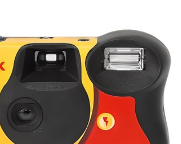
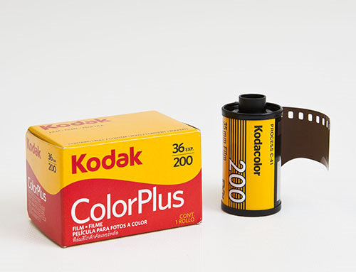

📷 How to Use
어떻게 사용하나요?
01. 필름 감기
촬영하기 전에 오른쪽에 있는 다이얼을 천천히 돌려 ‘딸깍’ 소리가
날 때까지 감아주세요. 이 과정이 필름을 준비하는 단계입니다.
02. 촬영
카메라 뷰파인더로 촬영할 대상을 잘 보고 구도를 맞춘 뒤,
셔터 버튼을 눌러 사진을 찍어주세요.

03. 플래시 사용
어두운 실내나 밤에 촬영할 때는 플래시 버튼을 눌러 충전한 후 사용하시면,br
더 밝고 선명한 사진을 얻을 수 있습니다.

04. 촬영 완료 후
필름이 모두 감기면 카메라를 가까운 사진관이나 필름 현상소에 가져가 주세요.
전문가가 필름을 꺼내 현상하고 인화해 드립니다.
아날로그만의 따뜻한 감성을 사진으로 만끽해
보세요.